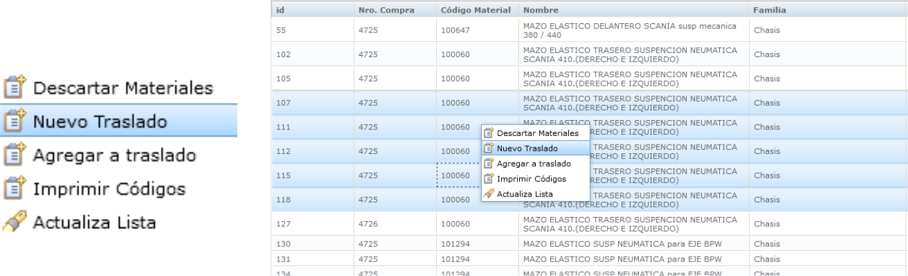
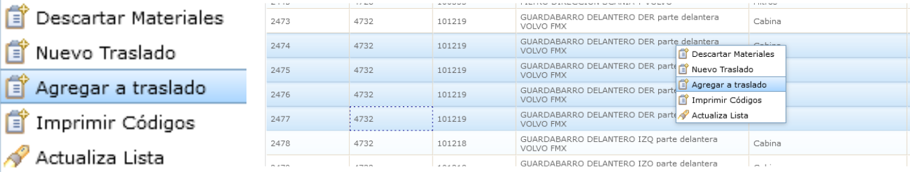
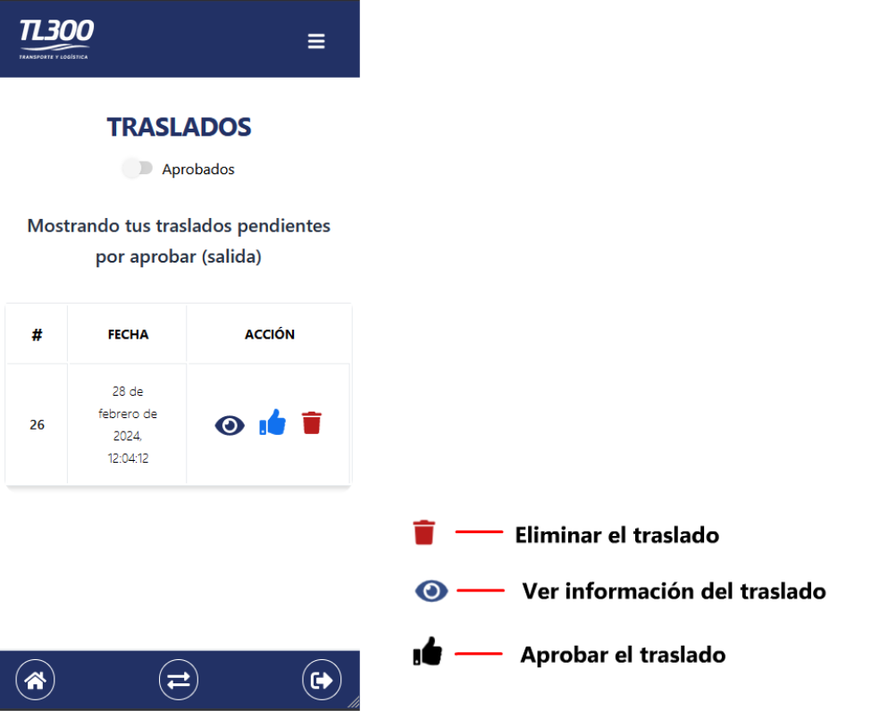

Inicio de sesión
La primera pantalla que verá en la app será del inicio de sesión. Allí deberá escribir el nombre de usuario y contraseña que se utiliza en Onus.
Presione Login para iniciar sesión.
Registrar traslados de material
En ONUS, en el panel de Gestión de depósitos - > Inventario de materiales
Al presionar "click" se abrirá a la derecha una grilla del inventario de materiales. Ahí podrá seleccionar varios materiales del inventario presionando la tecla Control + click sobre el material para ir seleccionádolo.
Una vez seleccionados los materiales, deberá presionar Click derecho y se abrirá un menú. En este menú deberá presionar en "Nuevo traslado". Tenga en cuenta que si alguno de los materiales seleccionados ya se encuentra registrado en un traslado, no podrá registrar el nuevo traslado.
En el menú verá opciones desplegables para seleccionar el depósito y el espacio. Una vez seleccionados, se registrará el traslado y se abrirá una alerta:
Presione en Aceptar y ya podrá ver el traslado en la grilla de traslados o podrá asociar más material al traslado registrado.
Si desea asociar más materiales al traslado, en la grilla de materiales del inventario, seleccione el material y presione Click derecho y esta vez seleccione la opción. "Agregar a traslado"
Se abrirá una grilla con los traslados registrados, seleccione el traslado al que quiere agregar el nuevo material y presione en aceptar:
Ver traslados de material pendientes
Una vez haya iniciado sesión en la aplicación con las credenciales del usuario de Onus que registró el traslado. Verá en la pantalla de inicio una alerta que le indicará si tiene traslados pendientes por aprobar. De igual manera podrá presionar en el botón del centro para dirigirse a la pantalla de traslados pendientes.
Al presionar lo dirigirá a la pantalla donde verá un listado de los traslados registrados pendientes por abrobar
Moviendo el "Swtich de Aprobados" verá un listado de los traslasdossignature_manager.html pendientes por aprobar (llegada), es decir, los traslados que fueron registrados y firmados por otros usuarios. Se habilitará también otro botón en los traslados que le permitirá ver la información del usuario que aprobó la salida de ese traslado.
Eliminar traslado
En la pantalla del listado de traslados al presionar sobre el botón Eliminar traslado se le mostrará una alerta para confirmar si elimina el traslado.
Presione en ACEPTAR para eliminar el traslado registrado.
Aprobar traslado
En la pantalla del listado de traslados al presionar sobre el botón Aprobar traslado se le mostrará una alerta para confirmar la aprobación del traslado.
Al presionar en ACEPTAR se dirigirá a una pantalla con un formulario para cargar los datos del responsable del traslado.
Deberá rellenar todos los campos: Nombre completo , Número de documento ,
Firma.
Para cargar la firma primero deberá dibujarla y luego verificarla con el botón Verificar Firma
Tenga en cuenta que si no verifica la firma no podrá aprobar el traslado.
Sólo cuando se haya verificado que ha dibujado una firma, podrá continuar.
Una vez haya ingresado los datos de manera correcta y haya verificado la firma, podrá aprobar el traslado deslizando sobre el botón "Aprobar traslado"
Cuando haya aprobado el traslado se dirigirá automáticamente a la pantalla de traslados y recibirá una notificación cuando el traslado se haya hecho.
Información de los traslados
En ONUS, en el panel de Gestión de depósitos - > traslado de materiales
Verá una grilla con el listado de traslados filtrados por la fecha y el estado del traslado,
Al hacer Click derecho y presionar en modificar
se abrirá un menú donde podrá ver diferente información del traslado como:
Información general Ahí podrá ver la información general del traslado como la nueva ubicación donde se moverá el material y la información del transporte del traslado
Ahí podrá cambiar la información del trasporte, agregando el chofer y el vehílo que transportará el material y observaciones en caso de ser necesario, tenga en cuenta que solo podrá cambiar esta información del trasporte cuando el traslado haya sido aprobado (firmado) para salir.
Otra información que verá en el menú es la de materiales, ahí podrá eliminar materiales del traslado, tenga en cuenta que solo podrá eliminar materiales del traslado solo cuando el traslado no haya sido aprobado es decir, cuando su estado sea el de registrado:
En la sección de estados, verá las fechas de cuándo se registró el traslado, cuando se registró en base (se aprbó la salida), cuando empezó a viajar y cuando finalizó (se aprobó la llegada)
Finalmente en la sección de documentos verá una grilla con la información de las aprobaciones de los traslados y los documentos:
Ordenes de pedido
En ONUS, en el panel de Gestión del taller - > Ordenes de pedido

Verá una grilla con el listado de las ordenes de pedido, podrá filtrarlas por fecha y estado
Al hacer Click derecho se mostrará un menú donde podrá
agregar una orden de pedido o modificar una existente:
Información general
Una orden de pedido es una PRE-ORDEN DE COMPRA
es decir, es el paso previo a crear una orden de compra.
En donde podrá seleccionar los materiales y la cantidad que
le será solicitada al proveedor.
La información que debe llenar al crear una nueva orden de pedido:
Una vez creada la orden de pedido, la podrá modificar, ver los estados, agregar material y ver
los documentos generados (firmas) :
Una vez creada la orden de pedido, también la podrá ver en la aplicación:
En cada tab se listarán ordenes de pedido con diferentes estados y podrá realizar diferentes acciones respecto a ello.
Veremos cada uno:
En la lista de ordenes de pedidos siempre verá la opción de firmar.
Lo podrá hacer para diferentes etapas de la orden de pedido,
verá un pequeño recordatorio en rojo en cada una:
(El proceso es igual a la aprobación de traslados)
Cuando se firma una orden en "RECIBIR ORDEN", es decir, cuando su estado está en "RECIBIDA" esta ya no se listará en ningún TAB
de la aplicación hasta que no modifique la información de transporte en ONUS :
Una vez haya modificado la información de transporte, podrá ver que la orden se lista en el TAB "DESPACHAR ORDEN"
Desde ahí podrá:
-Firmarla : Despachará la orden desde el lugar de llagada hasta el destino final.
-Ver el material : No podrá hacer ninguna modificación.
Finalmente está el último TAB que es para completar la orden:
Y ya solamente complete el proceso de firma: